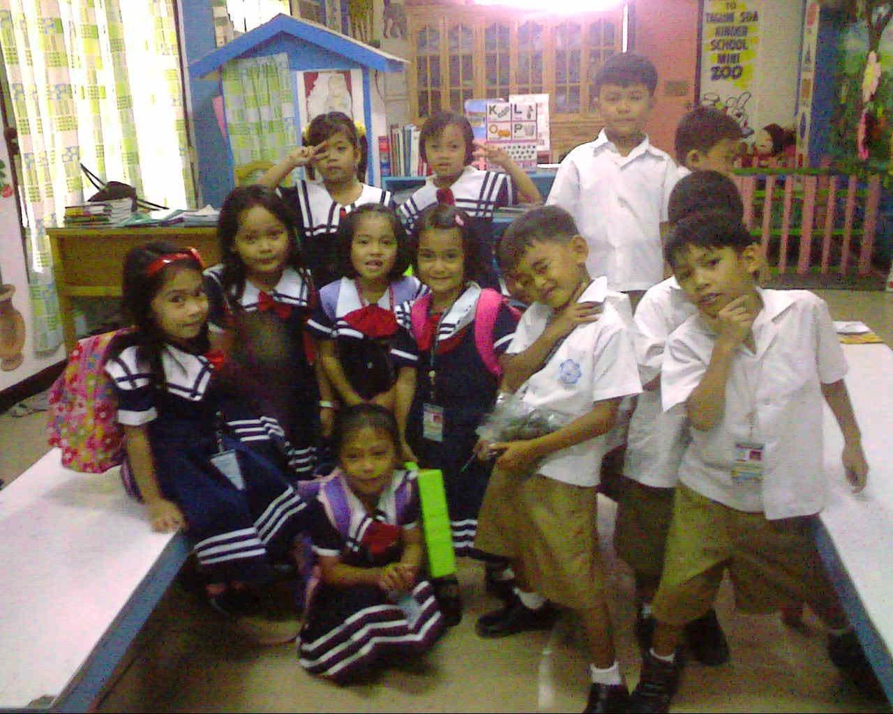
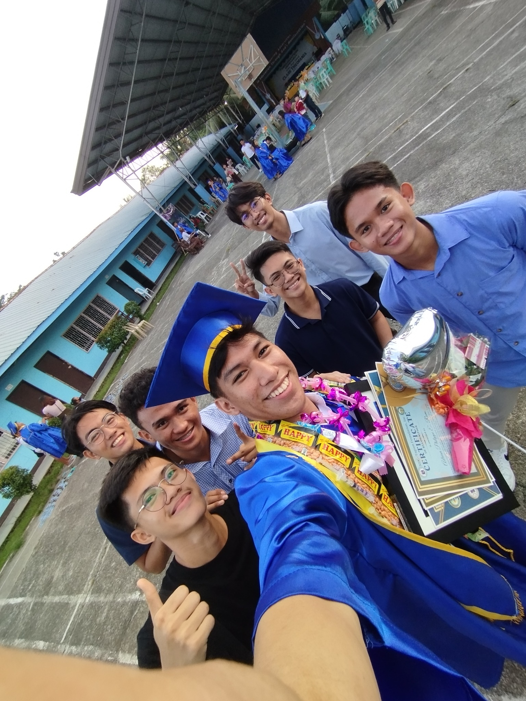
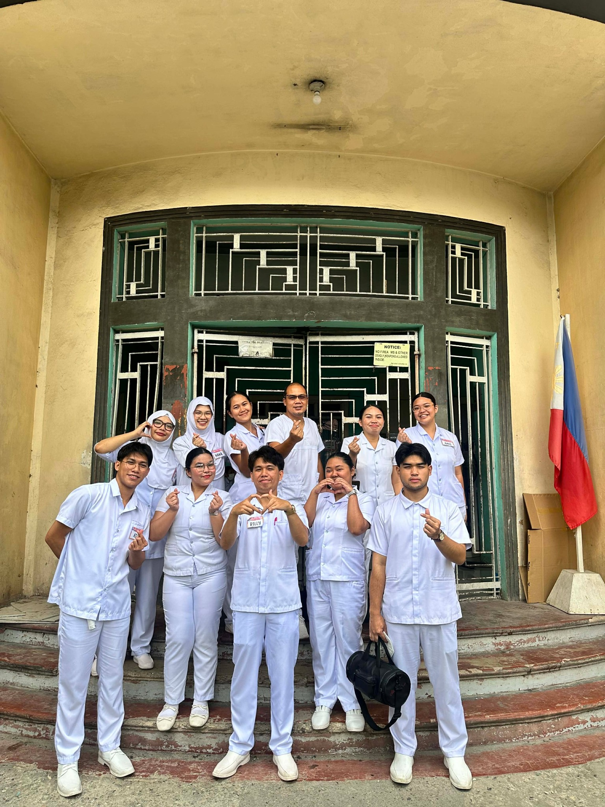

Elementary
Tagum Seventh-day Adventist Elementary School
I completed my elementary education at Tagum Seventh-day Adventist Elementary School. This photo is a memory from my early school years.
Education
The schools and current studies that have shaped my educational path.

I completed my elementary education at Tagum Seventh-day Adventist Elementary School. This photo is a memory from my early school years.

I completed my high school education at NDC - TFI in Tagum City. My high school years helped prepare me for the next stage of my education.

I am currently pursuing a Bachelor of Science in Nursing at MSU-IIT. This stage of my education is where I continue developing the knowledge, skills, and values needed for my future profession.
Future Direction
My current academic path is focused on reaching my professional goal of becoming a nurse.